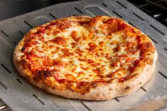

pizza recipe:

Pizza on the grill is a fantastic way to make pizza at home. The heat of a hot grill
is a perfect match for a professional pizza oven. Learn the tricks for making and
grilling pizza from scratch with this recipe. Feel free to use your favorite
toppings, but keep in mind not to overload the pizza.
Ingrediant:
- Pizza dough
- Tomato sauce
- Mozzarella cheese
- Olive oil
- Salt
Steps:
- Preheat the oven: Preheat your oven to 475F (245C).
- Prepare the dough: Roll out the pizza dough on a floured surface to your desired thickness and size. Transfer it to a baking sheet or pizza stone.
- Add the sauce: Spread a thin layer of tomato sauce evenly over the pizza dough, leaving a small border around the edges
- Add the cheese: Tear or slice the mozzarella cheese and scatter it evenly on top of the tomato sauce.
- Season: Drizzle a small amount of olive oil over the top of the pizza and sprinkle a pinch of salt for flavor.
- Bake: Place the pizza in the oven and bake for about 10-15 minutes, or until the crust is golden and the cheese is bubbly and slightly browned.